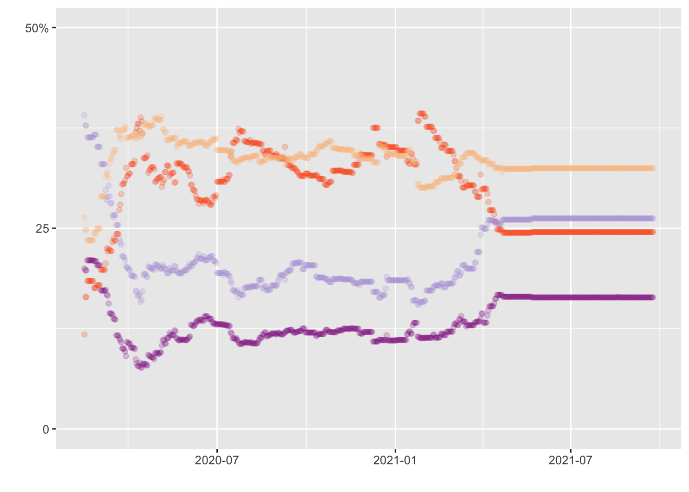

Visualization
This section focused on recreating a graph from a project from Fivethirtyeight entiteled How Americans View Biden’s Response To The Coronavirus Crisis.

Original Graphic
Loading packages
## here() starts at /Users/alexandragil/Desktop/MADA/ALEXANDRAGIL-MADA-portfolio##
## Attaching package: 'lubridate'## The following objects are masked from 'package:base':
##
## date, intersect, setdiff, unionData import
Import the dataset into R
data_location <- here::here("data", "covid_concern_toplines.csv")
data.covid <- read.csv(data_location)
str(data.covid)## 'data.frame': 1176 obs. of 8 variables:
## $ subject : chr "concern-infected" "concern-economy" "concern-economy" "concern-infected" ...
## $ modeldate : chr "9/24/2021" "9/24/2021" "9/23/2021" "9/23/2021" ...
## $ party : chr "all" "all" "all" "all" ...
## $ very_estimate : num 24.5 49 49 24.5 24.5 ...
## $ somewhat_estimate : num 32.5 35.5 35.5 32.5 32.5 ...
## $ not_very_estimate : num 26.2 10.3 10.3 26.2 26.2 ...
## $ not_at_all_estimate: num 16.38 3.74 3.74 16.38 16.38 ...
## $ timestamp : chr "14:00:37 24 Sep 2021" "14:00:33 24 Sep 2021" "12:15:29 23 Sep 2021" "12:15:34 23 Sep 2021" ...###Filter by "concern-infected"
infected<-filter(data.covid, subject=="concern-infected") %>%
select(subject, modeldate, very_estimate, somewhat_estimate, not_very_estimate, not_at_all_estimate)
infected$modeldate <- mdy(infected$modeldate)###Creating the plot
#Color-Hex Code
#LightPurple = #B19CD9
#Darkmagenta = #8B008B
#Orange = #FF4C00
#Baby orange = #FCBE85
p1<- ggplot()+
geom_point(data=infected, mapping=aes(x=modeldate, y=very_estimate), alpha=0.2, color="#FF4C00") +
geom_point(data=infected, mapping=aes(x=modeldate, y=somewhat_estimate), alpha=0.2, color="#FCBE85") +
geom_point(data=infected, mapping=aes(x=modeldate, y=not_very_estimate), alpha=0.2, color="#B19CD9") +
geom_point(data=infected, mapping=aes(x=modeldate, y=not_at_all_estimate), alpha=0.2, color="#8B008B") +
xlab(" ") +
ylab(" ") + scale_y_continuous(limits= c(0, 50), breaks=c(0, 25, 50), labels=c("0", "25", "50%"))
print (p1) # Plot with lines
infectedline<- data.covid%>%
filter(subject=="concern-infected")
infectedline$modeldate <- mdy(infectedline$modeldate)
p2<- ggplot()+
geom_line(data=infectedline, mapping=aes(x=modeldate, y=very_estimate), color="#FF4C00") +
geom_line(data=infectedline, mapping=aes(x=modeldate, y=somewhat_estimate), color="#FCBE85") +
geom_line(data=infectedline, mapping=aes(x=modeldate, y=not_very_estimate), color="#B19CD9") +
geom_line(data=infectedline, mapping=aes(x=modeldate, y=not_at_all_estimate), color="#8B008B") +
xlab(" ") +
ylab(" ") + scale_y_continuous(limits= c(0, 50), breaks=c(0, 25, 50), labels=c("0", "25", "50%"))
print (p2) #Its time to combine both plots P1 + P2
#Its time to combine both plots P1 + P2
cp <- ggplot()+
geom_point(data=infected, mapping=aes(x=modeldate, y=very_estimate), alpha=0.2, color="#FF4C00") +
geom_point(data=infected, mapping=aes(x=modeldate, y=somewhat_estimate), alpha=0.2, color="#FCBE85") +
geom_point(data=infected, mapping=aes(x=modeldate, y=not_very_estimate), alpha=0.2, color="#B19CD9") +
geom_point(data=infected, mapping=aes(x=modeldate, y=not_at_all_estimate), alpha=0.2, color="#8B008B") +
geom_line(data=infectedline, mapping=aes(x=modeldate, y=very_estimate), color="#FF4C00") +
geom_line(data=infectedline, mapping=aes(x=modeldate, y=somewhat_estimate), color="#FCBE85") +
geom_line(data=infectedline, mapping=aes(x=modeldate, y=not_very_estimate), color="#B19CD9") +
geom_line(data=infectedline, mapping=aes(x=modeldate, y=not_at_all_estimate), color="#8B008B") +
xlab(" ") +
ylab(" ") + scale_y_continuous(limits= c(0, 50), breaks=c(0, 25, 50), labels=c("0", "25", "50%")) +
scale_x_date( date_breaks = "1 month", date_labels = "%m/%d") +
theme_bw()
print(cp)
HELP!!!
What is the best way to combine graph? Unfortunately the final graph doesn’t look like the original. After multiples intents and hard work I can conclude that the key of the visualization is provide by the knodlege that you have about you raw data.